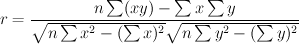
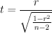
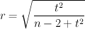
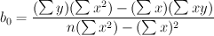
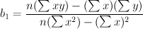
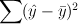
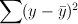
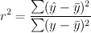
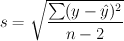

Statistics > Correlation and Regression > Linear Two Variables
This utility performs computations that determine the
correlation and regression between two variables.
To use this
utility, you must provide the paired x (independent/predictor)
and y (dependent/response) values in separate
columns. You must also provide the significance level for
the hypothesis test for correlation.
For correlation, the following values are computed:
- Linear correlation coefficient:

- Test statistic:

- Critical values , where t
is the inverse probability distribution of (1 - significance / 2)
in the Student's t distribution with n - 2
degress of freedom
- p-Value of the test statistic r
For regression equation Y = b0 + b1 x,
the y-intercept b0 and the slope
b1 are calculated as follows:


The null hypothesis H0 for a hypothesis test for
linear correlation is that there is no linear
correlation (ρ = 0), and the alternative hypothesis H1
is that there
is a linear correlation (ρ ≠ 0).
For variation, the following values are computed (
 is the mean of the y variable values,
is the y value predicted by the regression
equation):
is the mean of the y variable values,
is the y value predicted by the regression
equation):
- Explained variation: 
- Unexplained variation:
- Total variation: 
- Coefficient of determination: 
- Standard error of estimate: 
Dialog Inputs
- In the Independent/dependent variable series list, select the columns
containing data values for the input variables. The x variable is
the independent variable, and the y variable is the dependent
variable. Click Clear Input List to clear the input columns list.
- Significance level: Enter the significance level of
the hypothesis test for correlation.
- Select the Show a scatterplot for all pairs of data values
check box to display a scatter plot showing
data values in each pair of input variables. Use the provided options to
customize the scatterplot.
- The residual plots options are discussed in the
Residual Plot section.